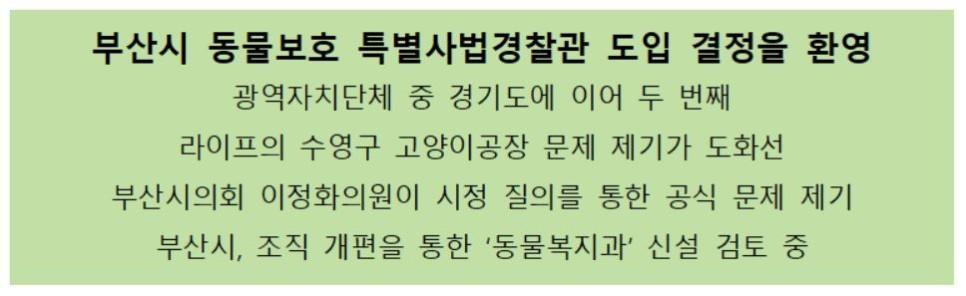

[Press Release] Welcome to the decision to introduce a Special Judicial Police Officer for Animal Protection in Busan City
Registration Date Author Life Attachment Notice_and_press5_05.jpg {kind=link}
○ The animal protection organization Life welcomes the introduction of the Special Judicial Police Officer for Animal Protection, which the city of Busan recently announced to the Busan City Council, and the promotion of animal welfare and the establishment of a new one, and urges the realization of the plan without a hitch.
At the end of 2017, an amendment to the Judicial Police Duties Act included animal cruelty offenses in the scope of the work of the Special Judicial Police. To date, however, the only municipality that has used the Special Judicial Police for Animal Protection has been Gyeonggi-do.
Life is committed to the reporting and prosecution of a large-scale illegal cat production facility in Guangandong, Busan Sub-permanent Province, known to the world around February, and to the rescue and care of cats. The accused, who had miserably used living life merely as a means of making money, were in a position to be brought to justice.
However, in this situation, the passive administration of the officials in charge of the Swimming District Office and Busan City Hall eventually provided a legal basis for the legal use of illegally used animals, and the majority of cats are still used as a tool of production.
Life has continued to point out these problems, and many citizens have also resonated with them both on- and offline. On 27 April, the Busan Municipal Council's Lee Chung-chung (Planning and Administrative Committee, Swimming District 1) inquired with the head of the municipal government about the issue of illegal cat production in Busan City, the problems of the overall animal protection and welfare policy of Busan City, the introduction of a special judicial police system for animal protection, and the establishment of a new animal protection and animal protection system, and recently received an official response.
According to Councillor Lee Jung-chung, it is likely that as soon as June of this year, the introduction of a special judicial police system for animal protection will be possible. The city is considering granting special judicial police powers to the distribution of concentrated acids and animal protection inspectors, or increasing the manpower of the Special Judicial Police and the Internal Affairs Department. Through the scheme, he said, he plans to improve the environment for the production and distribution of pets, eliminate illegal sales and eliminate animal cruelty. In order to respond positively to the recent surge in pet complaints, and to expand the organization dedicated to animal protection and welfare, the company said it is reviewing animal welfare and new construction, and is looking at the organizational department, organizational diagnosis, and job analysis.
As such, it is clear that the announcement that Busan City will come up with a way to control animal protection and welfare policies and actively deal with issues such as animal cruelty is a welcome event, although there is a sense of delay compared to Seoul and Gyeonggi Province. The city of Busan also has the experience of shutting down the Kupo Dog Market, which was supposed to be unsolvable forever. If the city has only the will, I am convinced that the overhaul of the organization, the system, and the establishment of a new establishment are not difficult problems.
○ The city of Busan should now regard animal protection and animal welfare policies as important tasks of corrective action and give full support. Please keep in mind that the realization of this simple value of "a world where animals are happy is also happy is also a happy person" involves the efforts and tears of many people, and the suffering and sacrifice of many animals.
○ Finally, I would like to thank the Busan City Council, including Councillor Lee Chung-chung, for sharing and considering the values of respect for life, including the issue of the illegal animal production industry, and I would like to ask you to continue to make efforts to check and advise the municipal government.